What Renu asked for, and what changed
Taken from the full caption track and frames of "Homepage Redesign Feedback and Spacing Issues". Timestamps point to the moment in the video.
| Feedback | What the mockup does now | Status |
|---|---|---|
| 0:22–0:57 · Hero: spacing issues, button placement, "the logo" and the section feel inexperienced | One rhythm (badge → 20px → headline → 20px → text → 32px → buttons → 32px → proof points). The floating Clutch image is replaced by a single "5.0 rated on Clutch" pill linked to the real Clutch profile. The form sits in one card; the stats strip uses one style. | Done |
| 1:00 · "Trusted by 150+ brands" heading is too big | Now a quiet 16px label above a logo wall of equal cells. | Done |
| 1:07 · Add a transcript of Lisa's video next to it | Lisa's 42-second video was transcribed locally (speech-to-text) and lightly cleaned: "Tanout" corrected to "Tanot", one stumble smoothed. The transcript card sits beside the video at the same height; the three written reviews form an equal row below. Raw transcript: lisa-warren-transcript-raw.txt. | Done · confirm wording |
| 1:11–1:40 · Reviews too vast; boxes are different sizes | Video + transcript form one equal-height row, then three equal review cards. Every author row sits on the same divider line. | Done |
| 1:41–2:03 · Services: one column too big, the other ends early | Tab list and panel are two cards of exactly the same height (measured). The panel is sized to the longest service, so switching tabs never shifts the page. | Done |
| 2:05–2:20 · Case study screenshot not clear | The screenshot gets more room on a tinted panel, plus a "View full size" link. The source image is only 512px wide, so it can't get sharper. | Needs 1600px+ image |
| 2:22–2:47 · Why us: think about how this section should look | Centred header, then a 3 × 2 grid of compact cards (icon beside text), all the same height, one CTA below. | Done |
| 2:48–2:56 · Awards could be presented better | Each award is a card with a fixed image stage (certificates, photos and trophies are contain-fitted so none are cropped or oversized) and a title row. | Done |
| 2:59–3:12 · Founder photo too big for the section | One founder card: the photo is a framed 280px portrait on a tinted panel instead of a full-height image. Name, stats and CTAs close the text column. | Done |
| 3:14–3:26 · Team section takes too much space | Compact horizontal cards (56px avatar + name + role), about 100px tall instead of ~190px. Real photos drop into the same avatar circle. | Done |
| 3:29–3:37 · "As featured on" should be its own section | Its own white band with hairline borders, label on the left and logos on the right, separate from the team and FAQ backgrounds. | Done |
| 3:43–3:48 · CTA background could be green, from the site theme | The final CTA band now uses the brand green (from the logo and the old "See Client Results" button). | Done |
What's wrong with the current page
I measured these in the browser at 1440, 1024 and 390px. The biggest problem is that spacing isn't systematic: every section sets its own padding, and the gaps between sections add up unevenly.
| Issue | Evidence (live site) | Impact |
|---|---|---|
| No spacing system | Section top/bottom padding values of 0, 20, 30, 42, 50, 70 and 140px, plus a stray 70px top margin above the case study. "Why choose us" opens with 140px of empty space. | High |
| Uneven section boundaries | Almost every section shares the same #EAF0FA background, so the eye can't find where one ends. Some sections have 0px bottom padding and the next has 50px top, which makes the gaps lopsided. | High |
| Fragmented sections | "…and many more." sits in its own 59px-tall container (twice). The reviews block is split into 3 containers (269 + 568 + 703px), and the case study into 2. | Medium |
| Oversized mobile layout | The page is 21,228px long at 390px. The testimonial row alone is 3,757px and "Why choose us" is 2,210px. Hero buttons have different widths, and the arrow wraps onto its own line. | High |
| Typography drift | 6 typefaces (Inter, Poppins, Roboto, DM Sans, Roboto Slab, system UI). About 10 headings are marked up as <h1>, including testimonial quotes and names. Body text varies between 16 and 19px at weights 100–400. | High |
| Inconsistent components | Buttons are 48, 58 and 76px tall with radii of 7, 8 and 10px. The header CTA is black while every other primary CTA is blue. The stats band is grey (#404040) but the footer is navy (#0A1628). | Medium |
| Heavy FAQ styling | Every question is a solid blue bar, so the blue fights the actual CTAs. Answers start with a leading space. | Low |
| Uneven card content | Blog thumbnails come in 3 aspect ratios (1:1, 1.56:1 and 1.5:1), so the cards have ragged heights. Award images are mixed photos, certificates and trophies at different sizes. | Medium |
| Content defects | The Sandeep Das testimonial appears twice. Team photos are missing (empty placeholder boxes). The founder's name is printed twice ("Renu Sharma / Renu Sharma Founder…"). "Best Roi Focused SEO Agency 2026" is used for two different awards. The HubSpot logo tile looked blank during the audit. | Medium |
| Dead links | Several CTAs point to #, including "View All Client Reviews", "Read full case study", "All Case Studies", "Talk to our team" and the final "Contact Us". | High |
Tokens and components
All values live in assets/css/tokens.css as CSS custom properties, so they can go straight into the Elementor global settings. The colours come from the live site; nothing new was introduced.
Colour
Typography: Inter
36→56 / 1.08 / 70028→40 / 1.15 / 70022→28 / 1.2 / 70018 / 1.4 / 60016→18 / 1.7 / 40016 / 1.65 / 400 · small 14–1513 / 600 / pillSpacing: 8-pt scale
button ↔ button, accordion itemseyebrow → title → descriptiongap between cardscard paddingsection header → content, panel paddinggap between split columnssection padding (desktop)Section padding steps down by breakpoint: 96 → 80 (≤1024) → 64 (≤820) → 56px (≤560). The container is 1240px wide with 32 / 24 / 20 / 16px gutters.
Buttons: 48px (40px in header), radius 10px
- One primary per group; the secondary always sits to its right.
- Title Case labels, with an arrow only on "go somewhere" CTAs.
- Full-width under 560px, with tap targets of 52px or more.
Cards, forms and images
- Card: white, 1px #E5E9F0 hairline border, 20px radius, 32px padding, near-flat shadow. Large surfaces (form, CTA) use 28px radius.
- Split sections: one
.splitgrid withalign-items: stretch, so both halves are always the same height. - Inputs: 46px tall, 10px radius, label above, 4px soft blue focus ring, inline error text.
- Icons: 22px line icons inside a 44px tinted tile; 20px checklist ticks.
- Images: blog 16:10, founder 4:5, awards 96px square, all with
object-fit(contain for certificates and logos, cover for photos). - Logo walls: a hairline grid of equal 96px cells, logos at 32px max height, greyscale until hover.
What changed, section by section
Revision 3 is a ground-up visual redesign with one restrained system: a white base, very light tinted bands, brand blue as the only accent, and one card style. The section order, copy and claims are unchanged.
Header & hero
- A slim 72px glass header with centred navigation and a single blue CTA.
- A soft gradient hero with a faint grid, a rating pill, a 56px headline and a floating form card.
- The four stats now sit in one clean white strip at the bottom of the hero instead of a heavy grey band.
Logos & reviews
- Client and "featured on" logos sit in hairline logo walls of equal cells, so every logo gets the same space.
- The video and featured quote form one equal-height row, with two equal cards below. All author rows line up along a divider.
Services
- A quiet vertical tab list inside a card, beside one panel card of exactly the same height. The panel is sized to the longest service, so switching tabs never shifts the page.
- Each panel: icon + title, description, 2-column checklist, CTAs pinned to the bottom.
Case study & why us
- The case study is one card split in two: the dashboard on a tinted panel, and the story, a 3-up metrics row and CTAs on the right.
- Why us is a centred header with a 3 × 2 grid of equal feature cards and one CTA, with no competing dark panels.
Awards, founder & team
- Award cards have a fixed 200px image stage (contain-fit) above the title, so certificates, photos and trophies all align.
- The founder photo matches the height of the story column, with a 3-figure stats row and the signature + CTAs at the bottom.
- Team cards use initials avatars until the real photos are supplied.
FAQ, blog, CTA & footer
- FAQ: the intro column matches the accordion's height, with the "Still deciding?" card pinned to the bottom.
- Blog cards use 16:10 images, a category pill, a 3-line title clamp and the meta row pinned to the bottom.
- A centred blue CTA band with a subtle grid. The footer has a white logo, 5 tidy columns and a slim legal bar.
Side-by-side at 1440px and 390px
These were captured from the live page and the mockup at the same viewport, each scrolled to the top of the same section.
Hero
A soft gradient hero with one Clutch rating pill, a 52px headline, even spacing down to the buttons and proof points, and the form in a single card.
Reviews
A centred header, then Lisa's video beside her transcript in one equal-height row, and three equal written reviews below.
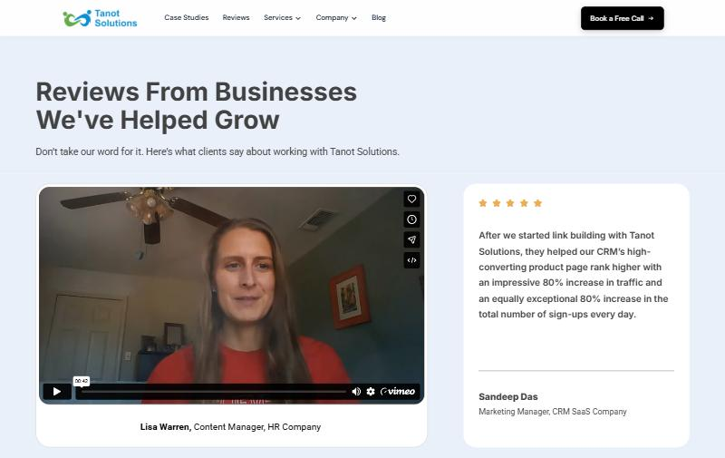
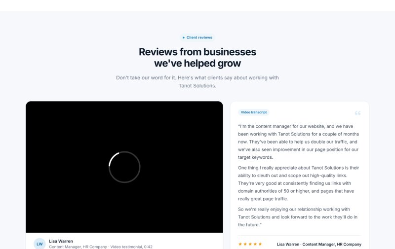
Services
The tab list and the panel are two cards of exactly the same height. The panel is sized to the longest service so switching tabs never shifts the page, and the CTAs sit at the bottom.
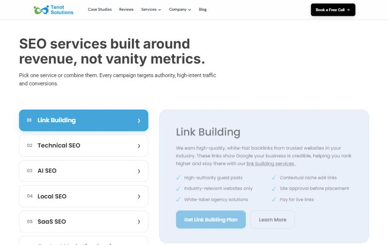
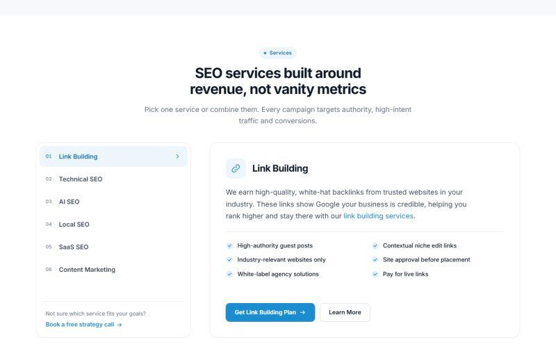
Why choose us
The 140px dead zone is gone. A centred header sits above a 3 × 2 grid of equal feature cards, each with its own icon, and one CTA below.
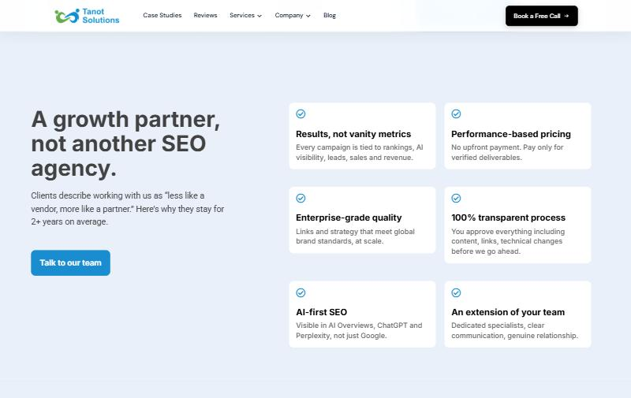
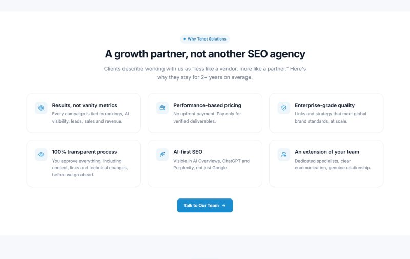
Meet the founder
A clean 4:5 portrait with the three founder stats (11+ years, founded 2020, 150+ clients) on a white card overlapping its edge, centred against the story. The mission line is highlighted, and the signature, booking CTA and LinkedIn close the column.
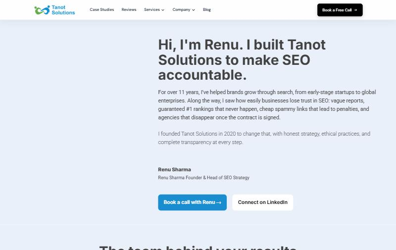
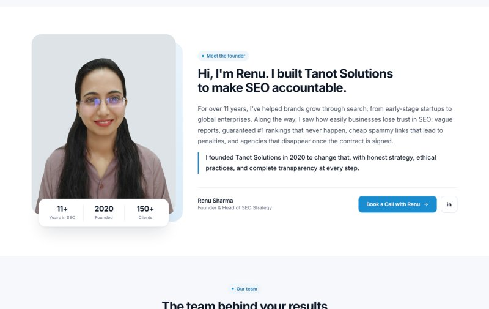
FAQ
A deep-navy feature band: numbered questions (01–06) as glass rows, and the open question turns into a bright white card so the answer stands out. The heading sits top-left and a "Still deciding? Talk to Renu" card sits bottom-left, so both columns start and end together.
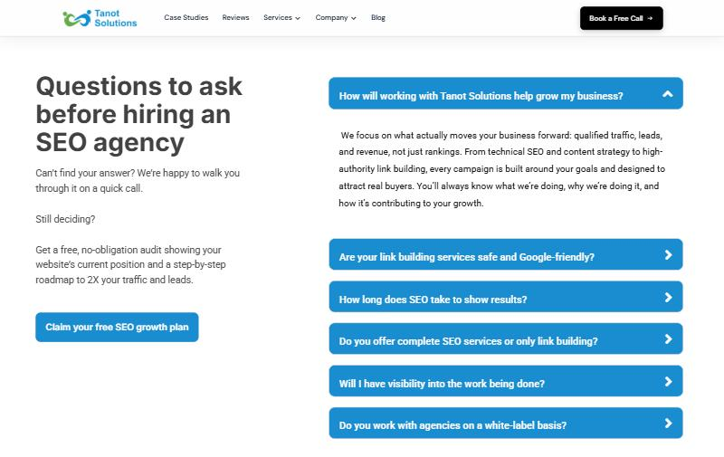
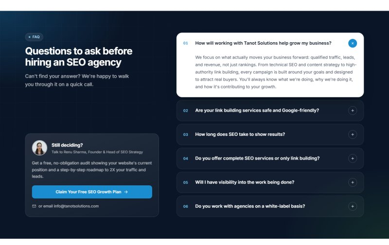
Book a call & footer
A split CTA in the brand green (as suggested in the video): heading, offer line and buttons on the left, and a white card on the right listing what the free SEO growth plan includes. The footer gets a reversed logo, all six services, a contact column and a slim legal bar.
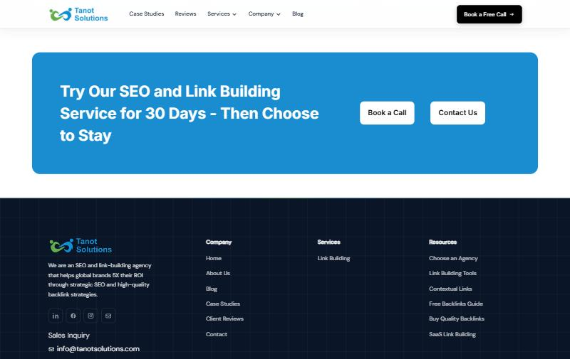
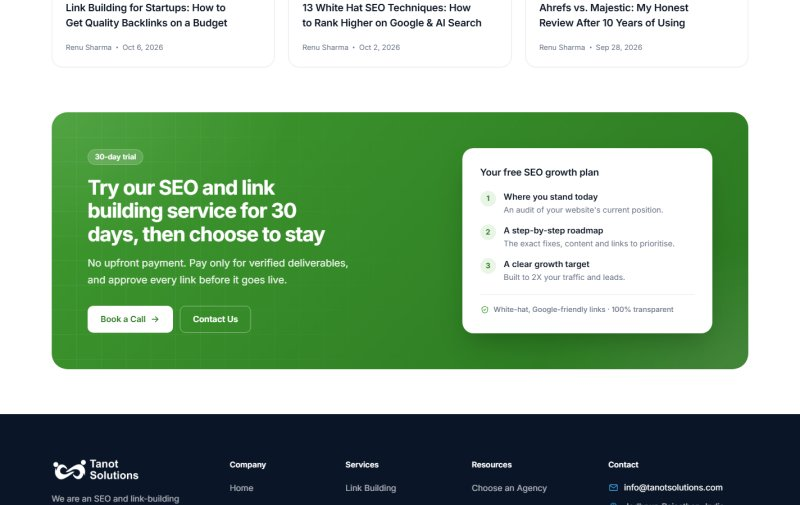
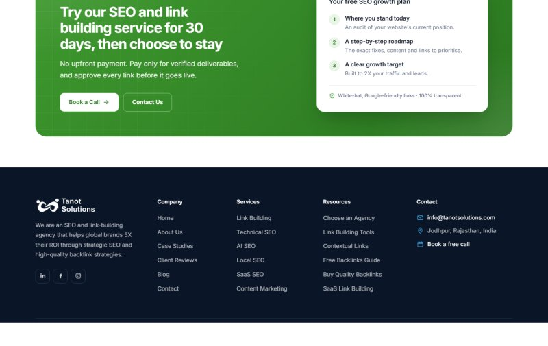
Mobile hero (390px)
Left-aligned text, 20px gutters and full-width buttons of equal size. The arrow no longer wraps.
Live mockup at every target width
Each frame below is the real mockup rendered at its true width and then scaled down. Scroll inside a frame to check any section. I verified 1440, 1280, 768, 390 and 360px for horizontal overflow (none) and console errors (none).
Desktop · 1440
Laptop · 1280
Tablet · 768
Mobile · 390
Small mobile · 360
Needs client confirmation
Nothing below was invented. These are gaps found in the live content, plus the small copy edits made for layout and readability.
- Lisa Warren transcript: generated with local speech-to-text and lightly edited (brand spelling, one stumble). Please confirm the wording with Lisa before publishing; the raw, timestamped version is in
review/lisa-warren-transcript-raw.txt. - Case study screenshot: the current dashboard image is 512px wide, which is why it looks unclear. Please export it again at 1600px or wider.
- Duplicate testimonial: the live page shows Sandeep Das's quote twice. The mockup keeps it once, in the row of three written reviews under the video and transcript.
- Team photos: all four team images on the live page are empty placeholders, so the mockup uses initials. Please supply portraits (square, at least 400px).
- Awards: two different awards are both titled "Best ROI Focused SEO Agency 2026". Please confirm each award's name, issuer and year.
- Missing URLs: the "Learn More" links for Technical, AI, Local, SaaS SEO and Content Marketing (only Link Building has a page in the nav), the direct case-study URL and Renu's LinkedIn. These are marked with
data-todoin the HTML. - Client logo names: two logos (first tile and the first tile of row 2) have no alt text on the live site and couldn't be identified with confidence.
- Copy edits made: sentence-case section headings; "02+" → "2+"; "Roi" → "ROI"; in the case study, "the traffic tanked up" → "traffic climbed" (since "tanked" reads as a drop); "Email" → "Work email" with placeholders; a one-line Clutch proof under the hero CTAs ("5.0 rating on Clutch", taken from the existing badge).
- Colour shifts: the stats band goes from grey to footer navy, and the header CTA from black to brand blue. Both reuse colours already on the site.
- Footer logo: the mockup turns the existing logo white with a CSS filter. Please supply an official reversed (white) logo file for production.
- Content placements: the final CTA reuses existing claims (no upfront payment, transparent process, white-hat links) and the existing "free audit" offer. The founder stats reuse 11+ years, founded 2020 and 150+ clients. The hero pill reuses the Clutch 5.0 rating and 11+ years, and links to clutch.co/profile/tanot-solutions (the URL used on the live site). The hero proof points reuse existing claims. Three short labels are new: "Real results from real campaigns" (case study), the form button "Get My Free Strategy" and "Not sure which service fits your goals?" (services). The footer lists all six homepage services; five link to the services section until their pages exist.
- Prototype limits: images are hotlinked from tanotsolutions.com, the lead form only validates (it isn't wired to WPForms), and the reviews video is the live Vimeo embed.